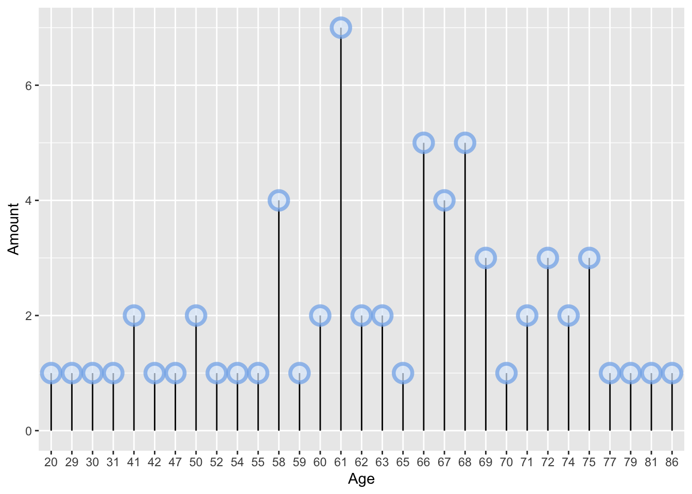
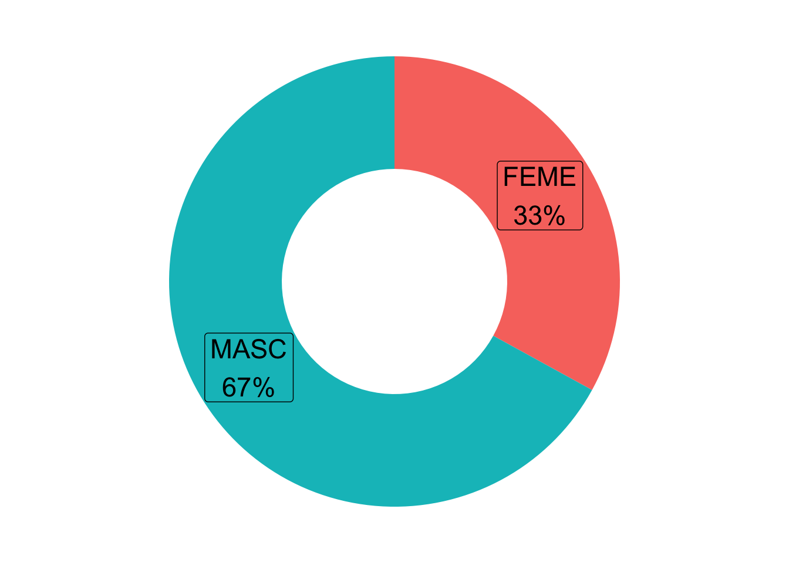

Cardiology Report
Grupo 7
15 June, 2021
Cardiology Report
To optimally analyze the Hospital Austral Cardiology dataset, we started by searching information and collecting research from universities, institutions and organizations with experience in cardiology.
Then we proceeded to apply the knowledge acquired in analyzing the dataset and looking for possible combinations that bring new information to improve the prediction of cardiac events.
First of all we decided to get some metrics in terms of the dataset. We wanted to know the basic things that we needed in order to start analyzing the given data.
Graphs showing the percentages of men and women from the sample and their average ages where key to gain a basic understanding of what we were going to deal with.
According to research from DR. Enresto Delgado Cidranes in Peligros de la Angioplastia patients who are over 70 years old have a higher risk during procedure. This means that patients above this age are going to be taken in consideration at the time of analyzing the dataset.

Analysis
After curating the dataset, a deep analysis was made in the search for connections between the variables which led to more complete queries.
The variables considered to be presented by graphs were: Tiempo de Bomba, Complicaciones Inmediatas, Complicaciones Tardias, vasos Angioplastiados
In the following graph the reason for admission is explored. This graph informs us about the most common problems which led to patients being hospitalized.

Patients between 55 and 72 years old are more prone to needing an external pump during procedure. It was decided that analyzing the amount of time a patient had the pump, tied to their age could give more insight to the problems related to this. The paper Complicaciones quirurgicas gives a more in depth perspective of why older patients tend to need more time with an artificial source of pumping. Cardiac surgeries with extracorporeal circulation also increase the risk of complications as they are aggressive interventions with manipulation and lung collapse during surgery

In conclusion, it was found that what was stated in the paper mentioned above also applied to the Hospital Austral Dataset. Patients between the mid fifties and low seventies tend to use an external pump during surgery. This lowers the risk of failure in a risky procedure such as this.
Complications by age
Age plays an important role at the time of facing complications during and after surgery. The following graph explores the ages were more problems have been registered.
It can be clearly seen that age affects the number of complications seen in the procedure. Even though the dataset has less than 400 patients, which will lead to deviations, it is clear that people who are in their late 50s are more likely to face problems during procedure.
Complications by sex
Another key factor is the sex of the patients
As we can see, the difference between men and women is 14% less than in the entire dataset, which encourages us to think that women are more likely to have complications during of after surgery.
Coronopathy and succesful vessels
A higher number of angioplasted vessels means lower success rate. 87% for 1 vessel, 80% for 2 vessels and 69% for 3.
After analyzing the dataset, some conclusions surged by looking and understanding the previous graphs and plots. Clearly, older people are more prone to have lessions and face problems during the surgery. This led to quetioning how can this be reduced?
Studies have shown that the use of external pump in risky procedures reduces the potential of facing complications by 25%. As a starting point a deeper analysis is going to be made on whether it is more convenient to the hospital to involve more patients into this type of external aid to prevent future problems and increase the success rate.
Predictor
The analysis of the dataset led to…